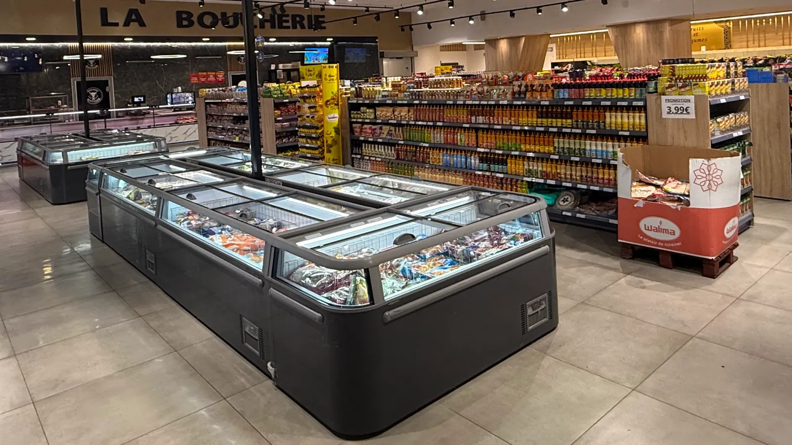

Halal
Halal
Boucherie
Brochettes & marinades
Le comptoir boucherie : marinades maison prêtes à griller.

Le concept qui a conquis Manosque s'installe dans les Hautes-Alpes : un supermarché halal complet, frais et accessible, dans l'ancien Supeco de la ZAC de Fontreyne.
Après le succès de Manosque, Délice Market ouvre son deuxième supermarché à Gap, rue des Mimosas, dans la zone commerciale de Fontreyne.
Vous y retrouvez la même promesse : une boucherie halal avec de la viande française, des fruits et légumes frais chaque jour, une grande épicerie orientale et méditerranéenne, et toutes vos courses du quotidien en un seul passage.


Chaque rayon a son équipe et son savoir-faire. Choisissez, on s'occupe du reste.
Viande française, découpe et conseils au comptoir.

Le frais du jour, à prix justes.

Épices, huiles, conserves, pâtisseries.

Charcuterie halal à la coupe, fromages.


Poulets rôtis le week-end.

Surgelés, hygiène, beauté, entretien.
Un aperçu de nos rayons, à retrouver en magasin 7 jours sur 7.
HalalLe comptoir boucherie : marinades maison prêtes à griller.
 France
FranceViande française fraîche, découpe à la demande.
 France
FranceConseils et découpe par nos bouchers.
Ven · Sam · DimDoré à la broche, avec ses accompagnements.
 Arrivage quotidien
Arrivage quotidienFraîcheur et prix justes, tous les jours.
Arrivage quotidienPour vos salades, chorbas et légumes farcis.
 Méditerranée
MéditerranéeVertes, noires, cassées, marinées : servez-vous.
Épicerie orientaleHarissa, ras el hanout, huiles d'olive, conserves…
HalalPastrami, mortadelle, dinde fumée, tranchés devant vous.
 Fromagerie
FromageriePour vos plateaux, sandwichs et recettes.
 Nouveauté
NouveautéHoumous, caviar d'aubergine, tzatziki… sans conservateur.
 Nouveauté
Nouveauté350 ml, 5 parfums à découvrir, sans colorant.
 Beauté
BeautéPlusieurs fragrances disponibles en magasin.
 Surgelés
SurgelésLe format géant 12 × 40 ml pour l'été.
Nouveautés et temps forts de la boutique, à découvrir sur place.
★★★★★« Des bouchers très gentils et accueillants, même à l'heure de fermeture. Ils sont très professionnels et vous servent toujours avec le sourire. La viande est de qualité, le magasin est très propre. »
★★★★★« Magasin très bien, rangé et organisé. Un large choix, une large gamme halal. Personnel très accueillant et sympathique. »
★★★★★« Très bon accueil. Magasin ouvert le dimanche et bien achalandé. »
| Lundi | 8h30 – 21h |
| Mardi | 8h30 – 21h |
| Mercredi | 8h30 – 21h |
| Jeudi | 8h30 – 21h |
| Vendredi | 8h30 – 21h |
| Samedi | 8h30 – 21h |
| Dimanche | 8h30 – 21h |
Recevez chaque semaine nos offres & nouveautés directement par e-mail ou SMS.